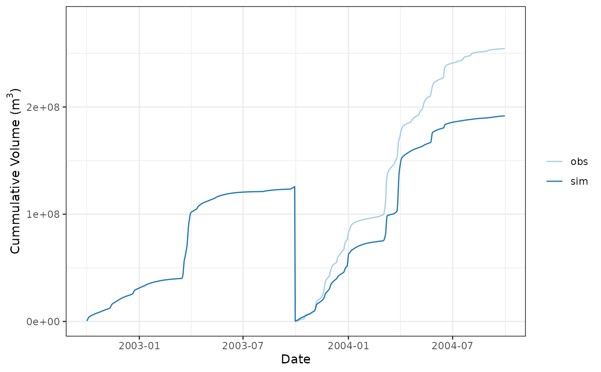
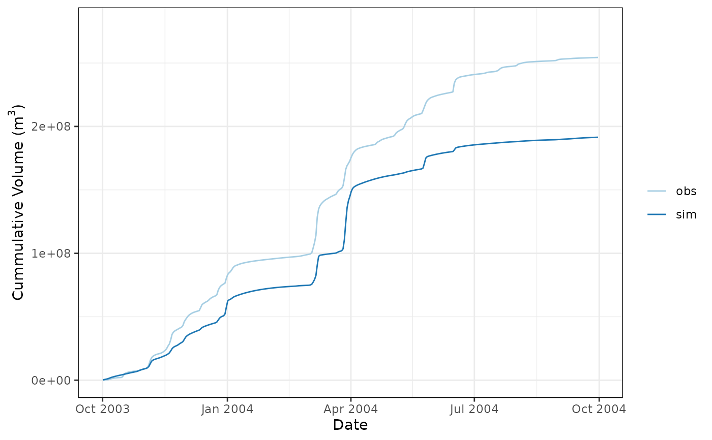

rvn_cum_plot_flow creates a cumulative flow plot of the simulated flows; optionally includes an observed and/or inflow series as well. Useful in diagnotic analysis of model outputs.
rvn_cum_plot_flow(sim = NULL, obs = NULL, inflow = NULL, mm = 9, dd = 30)time series object of simulated flows
optionally supply an inflow series to plot as well
optionally supply an inflow series to plot as well
month of water year ending (default 9)
day of water year ending (default 30)
return TRUE if the function is executed properly
Plots the simulated series in all cases, and will include the observed and inflow plots if they are supplied.
The sim and obs should be of time series (xts) format. The flow series are assumed to be daily flows with units of m3/s.
Note that a plot title is purposely omitted in order to allow the automatic generation of plot titles.
Note that the cumsum function does not have an na.rm=T argument, thus if there are any NA values in the water year of data for any provided series, the values beyond an NA value will be calculated as NA. It is up to the user to handle NA values appropriately fill in or replace NA values based on the type of data supplied. For flow series, linear interpolation for small periods of missing values may be appropriate.
rvn_flow_scatterplot for creating flow scatterplots
rvn_cum_plot_flow for creating generic cumulative function plotting
# load sample hydrograph data, two years worth of sim/obs
data(rvn_hydrograph_data)
sim <- rvn_hydrograph_data$hyd$Sub36
obs <- rvn_hydrograph_data$hyd$Sub36_obs
# plot cumulative flow for sim and obs
rvn_cum_plot_flow(sim,obs)
#> Warning: Removed 364 rows containing missing values or values outside the scale range
#> (`geom_line()`).

# plot cumulative flows for specific period
prd <- "2003-10-01/2004-10-01"
rvn_cum_plot_flow(sim[prd],obs[prd])
